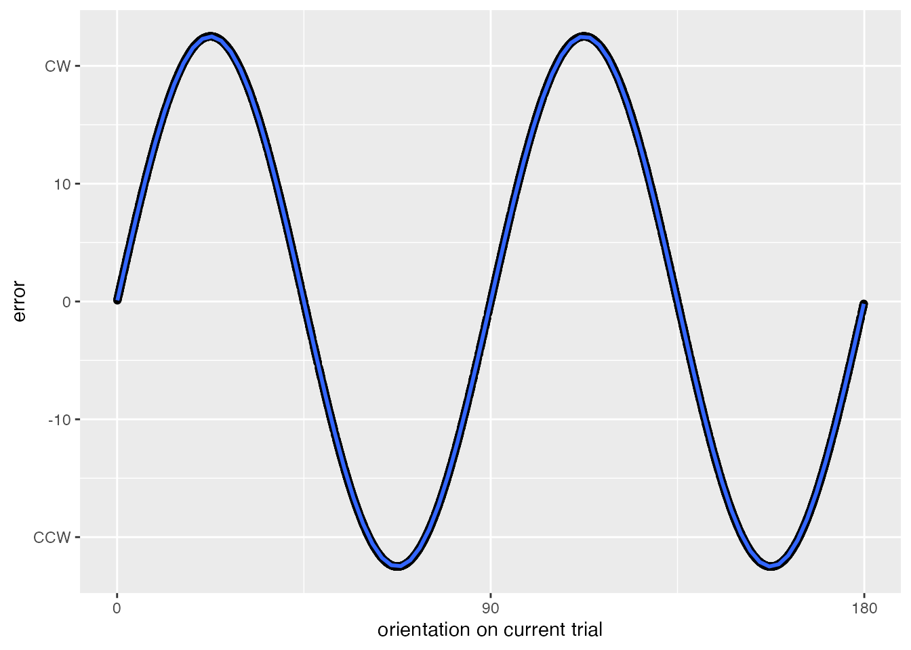
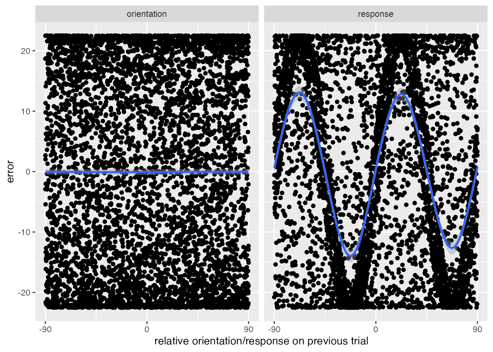
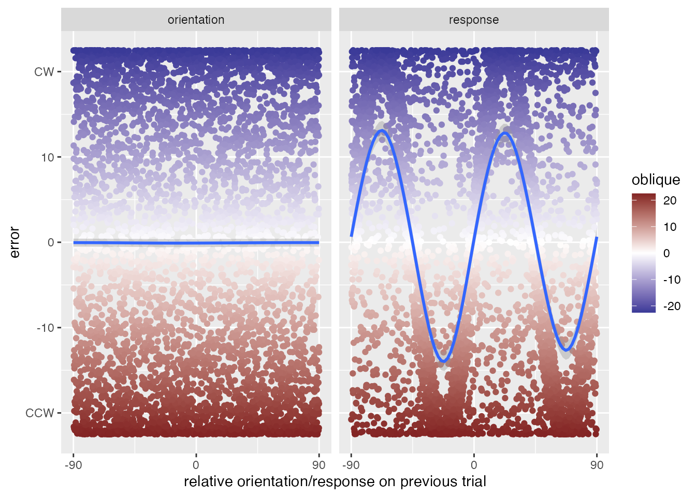
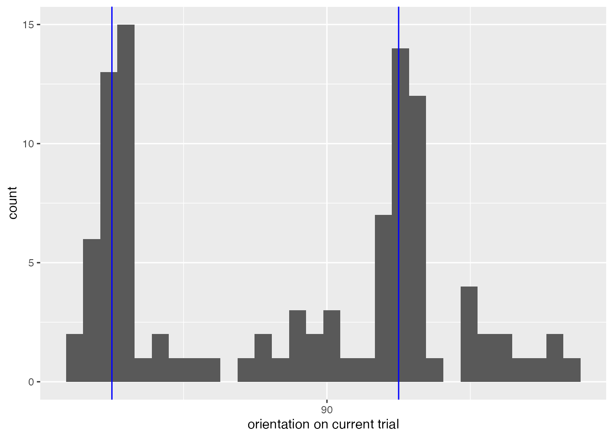
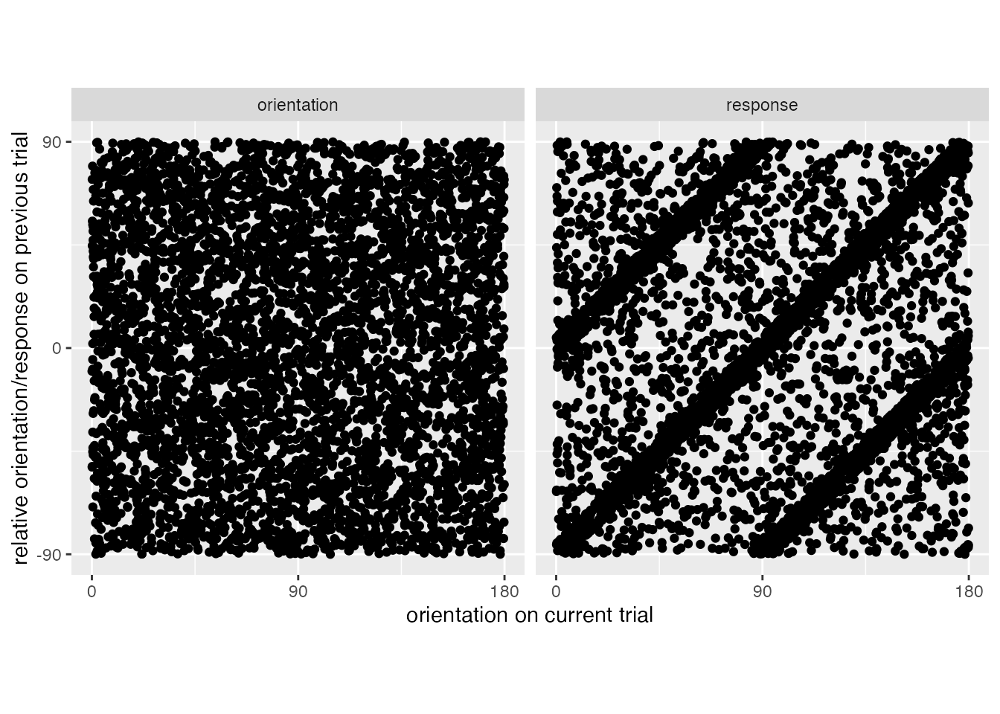
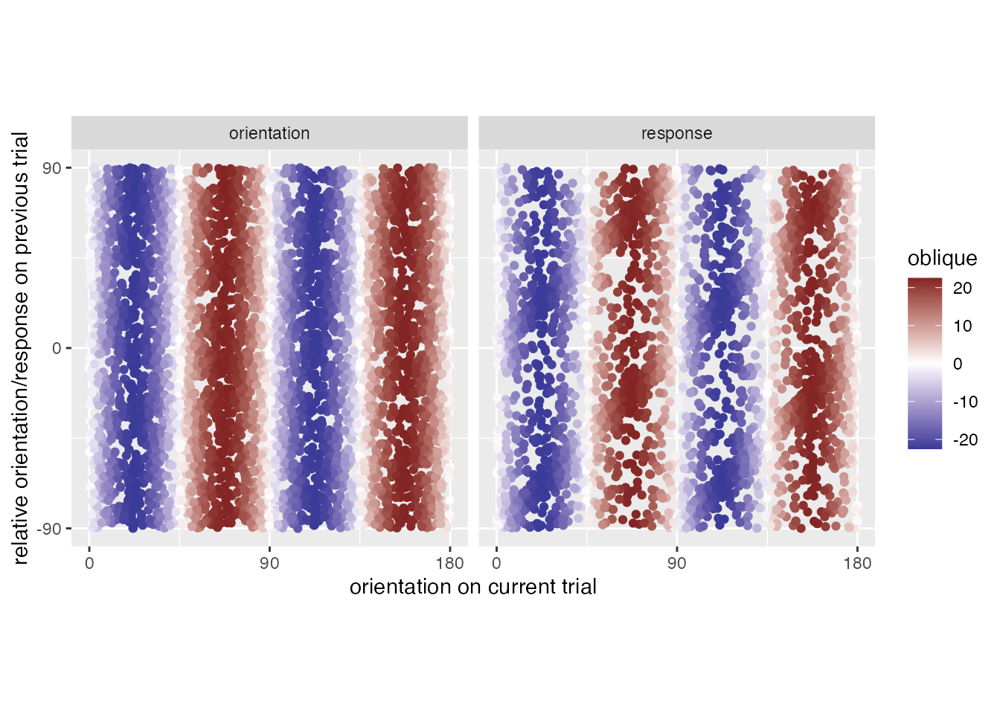

renv::use(lockfile = "renv.lock", verbose = FALSE)
knitr::opts_chunk$set(echo = TRUE, dev = "ragg_png")
set.seed(1234)
library(dplyr)
library(ggplot2)
library(tidyr)
library(ragg)I’m working on a project involving serial dependence. The project involves disentangling a dependence on the previous orientation from a dependence on the previous response. Unfortunately, there is a common way for a dependence on the previous response to be spurious, due to the oblique effect1. The first reference I’ve seen for this is a master’s thesis by Fritsche (2016). I didn’t follow that explanation, and so I’m using this post to explain how the oblique effect causes a spurious dependence on the previous response.
First, let’s show that the confound is real. Data will be generated with an oblique effect, and there will be no dependence between trials – neither on the previous orientation nor the previous response. There will be no response variability, meaning that errors will only be caused by the oblique effect. Since the data are simulated without dependencies, any dependence that emerges will necessarily be spurious.
# helper functions for converting between angles and degrees
rad <- function(degree) degree * pi / 180
deg <- function(radian) radian * 180 / pi
# magnitude of oblique effect
oblique <- rad(-22.5)
d0 <- tibble(
orientation = runif(5000, 0, pi)) |>
mutate(
trial = 1:n(),
oblique = oblique*sin(orientation*4),
response = rnorm(n(), orientation, 0) + oblique) To help generate the data, define a helper functions that calculates the signed, shortest angle between two angles (measured in radians).
#' @param deg1 numeric degree
#' @param deg2 numeric degree
#'
#' @return
#' signed difference between inputs, wrapped to +-pi
#' output is shortest distance to the first input
#'
#' @examples
#' # pi/2 is 45 degrees clockwise from pi, so the output is pi/2
#' ang_diff(pi/2, pi)
#' # pi is 45 degrees counterclockwise from pi/2, so the output is -pi/2
#' ang_diff(pi, pi/2)
#' # notice the discontinuity when the shortest angle switches direction
#' ang_diff(pi/2 - .01, 0)
#' ang_diff(pi/2 + .01, 0)
ang_diff <- function(deg1, deg2){
stopifnot(length(deg1) == length(deg2))
diff <- ( deg1 - deg2 + pi/2 ) %% pi - pi/2
out <- dplyr::if_else(diff < -pi/2, diff + pi, diff)
return(out)
}Then use the function ang_diff to calculate errors, and to calculate the relative orientation difference between the current trial and either the previous orientation or the previous response.
d <- d0 |>
mutate(
prev_response = lag(response),
prev_orientation = lag(orientation),
error = ang_diff(orientation, response),
orientation_diff = ang_diff(orientation, prev_orientation),
response_diff = ang_diff(orientation, prev_response)) |>
filter(trial > 1) |>
mutate(across(where(is.double), deg))Plot errors as a function of the current orientation to confirm that there is an oblique effect.
d |>
ggplot(aes(x=orientation, y=error)) +
geom_point() +
geom_smooth(
formula = y ~ sin(rad(x)*4),
method = "lm",
se = FALSE) +
scale_y_continuous(
breaks = c(-20, -10, 0, 10, 20),
labels = c("CCW", -10, 0, 10, "CW")) +
scale_x_continuous(
name = "orientation on current trial",
labels = c(0, 90, 180),
breaks = c(0, 90, 180))
Is there a dependence on either the previous response or previous orientation?
d |>
pivot_longer(
cols=c(orientation_diff, response_diff),
names_to = "covariate",
names_pattern = "(orientation|response)",
values_to = "x") |>
ggplot(aes(x=x, y=error)) +
geom_point() +
facet_wrap(~covariate) +
geom_smooth(
method = "gam",
formula = y ~ s(x, bs = "cc", k=9)) +
scale_x_continuous(
name = "relative orientation/response on previous trial",
labels = c(-90, 0, 90),
breaks = c(-90, 0, 90))
What’s going on? There are two key factors: first, the oblique effect operates on the previous trial to make some previous responses more likely than others, and second the oblique effect operates on the current trial to make certain previous responses more likely to have errors in a consistent direction. To be precise, I’ll use the following terminology.
Terminology
Trials will be indexed by natural numbers. The “current trial” will be referred to as trial \(n\), and the “previous trial” as trial \(n-1\). The orientation and responses on each trial will be thought of as sequences2. The variable \(O_n\) means the orientation on trial \(n\) (i.e., the current trial), whereas the variable \(O_{n-1}\) means the orientation on trial \(n-1\) (i.e., the previous trial). Similarly, the variable \(R_n\) means the response on trial \(n\), whereas the variable \(R_{n-1}\) means the response on trial \(n-1\).
All angles (e.g., \(O_n\) and \(R_n\)) use the convention that \(0^\circ\) is horizontal, \(45^\circ\) is one quarter rotation counterclockwise from horizontal (e.g., at 1:30 on a clock), \(90^\circ\) is vertical, etc. However, differences between angles are reported such that a positive value implies a clockwise shift (i.e., moving forward on the clock) and a negative value implies a counterclockwise shift. For example, an error of \(10^\circ\) means that \(R_n\) is \(10^\circ\) clockwise from \(O_n\). This means that we can determine an “attraction” effect based on whether the sign of the error on trial \(n\) matches the sign of the difference between \(O_n\) and either \(O_{n-1}\) or \(R_{n-1}\). Conversely, a “repulsive” effect is when the error and differences have mismatched signs.
Explanation
First, consider a specific sequence of trials that could produce a spurious effect. To help with the explanation, the trials are colored based on the current trial.
d |>
pivot_longer(
cols=c(orientation_diff, response_diff),
names_to = "covariate",
names_pattern = "(orientation|response)",
values_to = "x") |>
ggplot(aes(x=x, y=error)) +
geom_point(aes(color=oblique)) +
scale_color_gradient2(low = scales::muted("blue"), high = scales::muted("red")) +
facet_wrap(~covariate) +
geom_smooth(
method = "gam",
formula = y ~ s(x, bs = "cc", k=9)) +
scale_y_continuous(
breaks = c(-20, -10, 0, 10, 20),
labels = c("CCW", -10, 0, 10, "CW")) +
scale_x_continuous(
name = "relative orientation/response on previous trial",
labels = c(-90, 0, 90),
breaks = c(-90, 0, 90))
When \(O_{n-1}\) is \(0^\circ\), the oblique effect will have not caused an error. So, for \(R_{n-1}\) to be \(22.5^\circ\) clockwise to \(O_n\), then \(O_n\) could be, itself \(22.5^\circ\). But when \(O_n\) is \(22.5^\circ\), the oblique effect will cause an error; \(R_n\) will be a clockwise error, in the same direction as \(R_{n-1}\). Since \(R_n\) exhibits an error in the direction of \(R_{n-1}\), it will look like \(R_{n-1}\) caused an attraction.
More importantly, when the oblique effect acts on trial \(n-1\), it will cause responses to collect along the cardinal axes. That is, regardless of the orientation on trial \(n-1\), \(R_{n-1}\) will be close to either \(0^\circ\) or \(90^\circ\). This means that, whenever \(O_n\) is close to \(22.5^\circ\), the oblique effect’s influence on the previous response, \(R_{n-1}\), makes it more likely that \(R_{n-1}\) will be approximately \(22.5^\circ\) clockwise from \(O_n\), and then the oblique effect on trial \(n\) will further push the response toward \(R_{n-1}\).
We can see this play out empirically by looking at \(O_n\) as a function of \(R_{n-1}\); when \(R_{n-1}\) is close to \(22.5^\circ\), there is an over-representation of orientations for which the oblique effect will bias responses toward the previous response.
d |>
filter(between(response_diff, 21, 24)) |>
ggplot(aes(x=orientation)) +
geom_histogram(bins=30) +
scale_x_continuous(
name = "orientation on current trial",
labels = c(0, 90, 180),
breaks = c(0, 90, 180)) +
geom_vline(xintercept = c(22.5, 112.5), color="blue") 
We can think about this from the other direction, too; when \(R_{n-1}\) is \(22.5^\circ\) clockwise from \(O_n\), it’s relatively difficult for \(O_n\) to be around \(67.5^\circ\). For example, when \(O_n=67.5\), the previous response could be \(22.5^\circ\) if \(O_n=45^\circ\), but nearly no other orientation would work; when \(O_n\) is near but not exactly \(45^\circ\), the oblique effect on trial \(n-1\) will push \(R_{n-1}\) away from \(45^\circ\), away from a response that could be \(22.5^\circ\) clockwise to \(O_n\). This is important because, if it is rare for trial \(n\) to have both \(O_n=67.5\) and \(R_{n-1}\) be \(22.5^\circ\) clockwise from \(O_n\), then the oblique effect will be imbalanced.
Together, this means that when the oblique effect on trial \(n\) causes a maximal clockwise error, the oblique effect on trial \(n-1\) makes it more likely that the previous response is also clockwise and less likely that it’s counterclockwise. The result is a spurious dependence on the previous response.
We can see this play out more generally by looking at the current orientation as a function of the previous orientations and responses.
d |>
pivot_longer(
cols = c(orientation_diff, response_diff),
names_to = "covariate",
names_pattern = "(response|orientation)") |>
ggplot(aes(x=orientation, y=value)) +
facet_wrap(~covariate) +
geom_point() +
coord_fixed() +
scale_y_continuous(
name = "relative orientation/response on previous trial",
labels = c(-90, 0, 90),
breaks = c(-90, 0, 90)) +
scale_x_continuous(
name = "orientation on current trial",
labels = c(0, 90, 180),
breaks = c(0, 90, 180))
As expected, there is no relationship between \(O_n\) and \(O_{n-1}\), but there is a strong relationship between \(O_n\) and \(R_{n-1}\). When \(O_n \in (0,45)\), then it’s likely that \(R_{n-1} \in (0,22.5)\) (clockwise), or \(R_{n-1} \in (-90, -67.5)\) (counterclockwise). The figure below shows the same data, but now the data are colored according to how the oblique effect will cause errors on trial \(n\).
d |>
na.omit() |>
select(-response, -error) |>
pivot_longer(
cols = c(orientation_diff, response_diff),
names_to = "covariate",
names_pattern = "(response|orientation)") |>
ggplot(aes(x=orientation, y=value)) +
facet_wrap(~covariate) +
geom_point(aes(color=oblique)) +
scale_color_gradient2(low = scales::muted("blue"), high = scales::muted("red")) +
coord_fixed() +
scale_y_continuous(
name = "relative orientation/response on previous trial",
labels = c(-90, 0, 90),
breaks = c(-90, 0, 90)) +
scale_x_continuous(
name = "orientation on current trial",
labels = c(0, 90, 180),
breaks = c(0, 90, 180))
Fortunately, this spurious bias isn’t too hard to adjust for3. But the point is that it would be a mistake to look at just a dependence on the previous orientation if there is an oblique effect; analyses must adjust for the oblique effect.
I’m not sure if there is a similar issue with other domains (e.g., when participants discriminate tones, pain, faces, etc). Perhaps edge effects could cause a similar issue (e.g., if people are more likely to respond to the ends or middle of the scale)?
References
Fritsche, Matthias. 2016. “To Smooth or Not to Smooth: Investigating the Role of Serial Dependence in Stabilising Visual Perception.” Master’s thesis, Radboud University.
Wei, Xue-Xin, and Alan A Stocker. 2015. “A Bayesian Observer Model Constrained by Efficient Coding Can Explain’anti-Bayesian’percepts.” Nature Neuroscience 18 (10): 1509.
Footnotes
This effect occurs when participants are asked to report orientations. Participants are differently accurate across the range of orientations; they are maximally accurate when reporting \(0^\circ\), \(45^\circ\), \(90^\circ\), and \(135^\circ\), but minimally accurate at intermediate orientations (\(22.5^\circ\), \(67.5^\circ\), etc). The errors can either be clockwise or counterclockwise, depending on the experiment. For an overview, see Wei and Stocker (2015).↩︎
This won’t be used, but sequence of orientations could be written \((O_n)_{n\in\mathbb{N}}\), and the sequence of responses \((R_n)_{n\in\mathbb{N}}\). Selecting a particular trial involves dropping the parentheses; \((O_n)_{n\in\mathbb{N}}\) emphasizes the whole sequence, whereas \(O_n\) means take a particular (but arbitrary) element of the sequence. I am not a mathematician, and this post is a quick and dirty explanation mostly meant for later me, so don’t expect formality.↩︎
In a regression model of the errors, it would suffice to include a sinusoidal term.↩︎